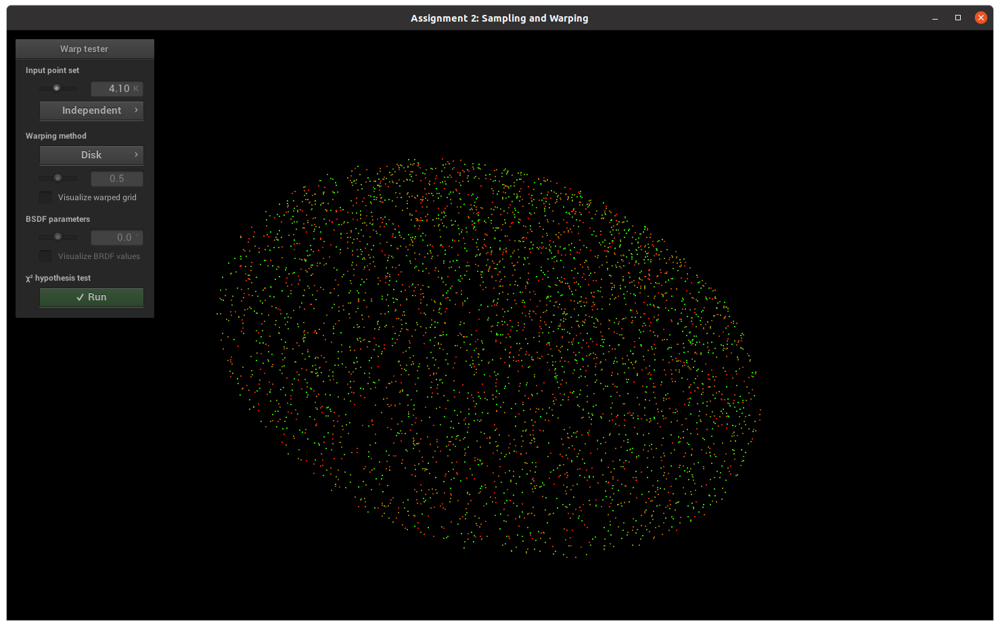
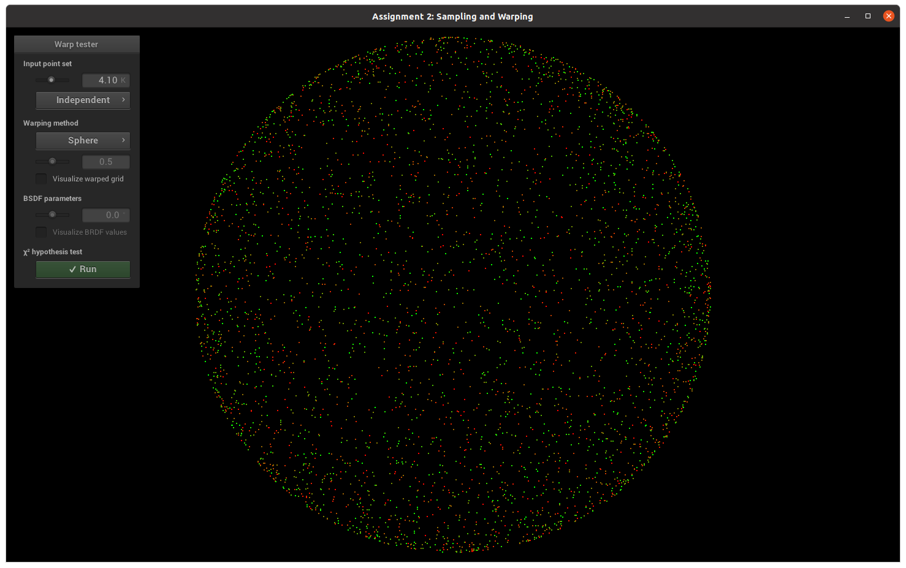
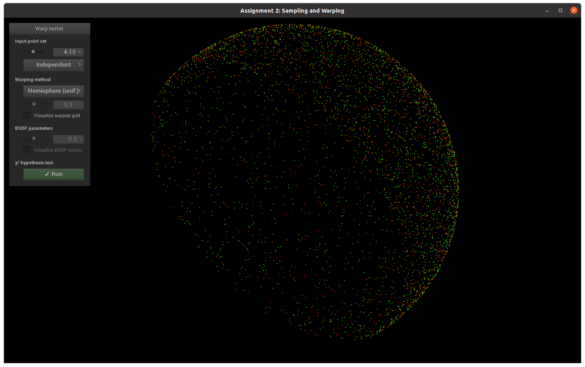
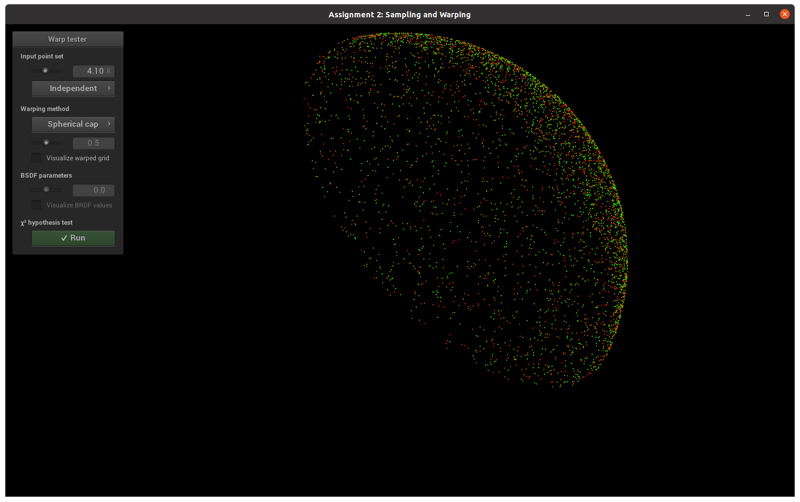
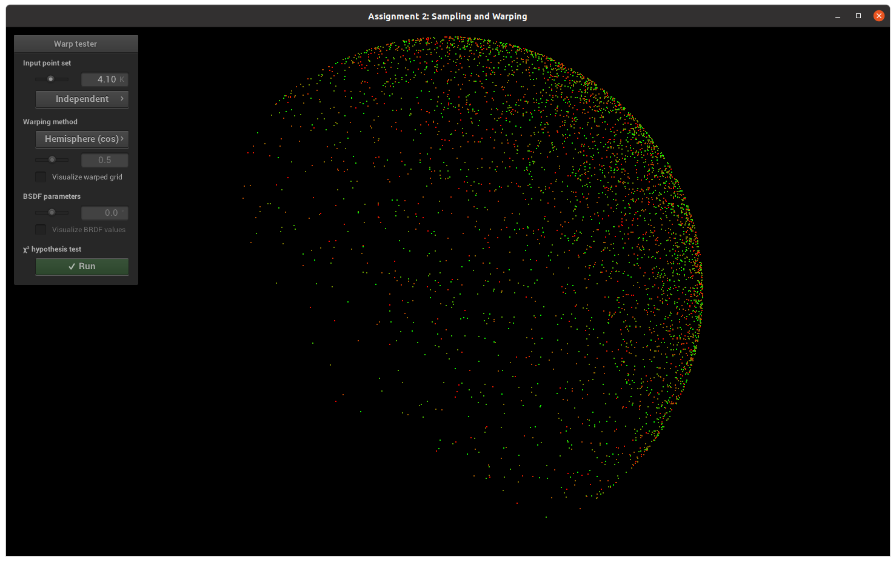
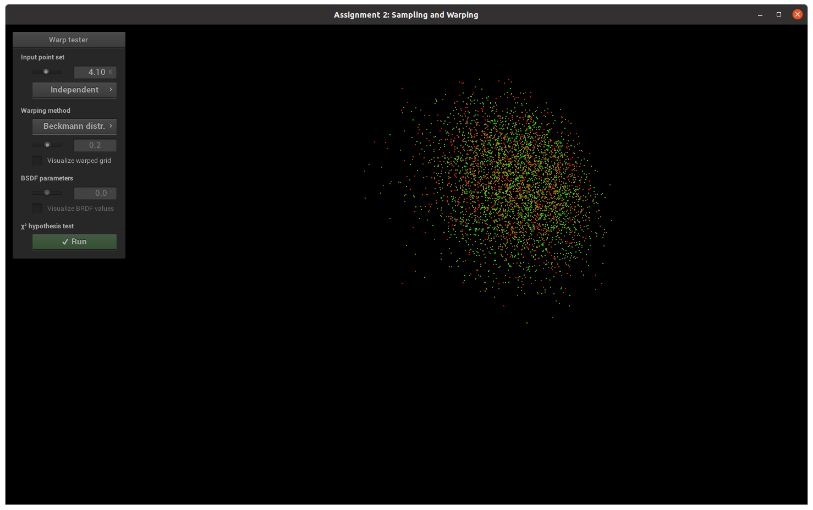

The derivation is below.
float angle = 2 * sample.x() * M_PI;
float size = sqrt(sample.y());
return Point2f(cos(angle) * size, sin(angle) * size);

The derivation is below.
Vector3f cylinder = squareToUniformCylinder(sample);
float r = sqrt(1 - pow(cylinder.z(), 2));
return Vector3f(r * cylinder.x(), r * cylinder.y(), cylinder.z());

The derivation is below.
Vector3f cylinder = squareToUniformCylinder(sample);
float r = sqrt(1 - pow(cylinder.z(), 2));
return Vector3f(r * cylinder.x(), r * cylinder.y(), abs(cylinder.z()));

The derivation is below.
Vector3f cylinder = squareToUniformCylinder(sample);
cylinder.z() = (abs(cylinder.z() * (1 - cosThetaMax))) + cosThetaMax;
float r = sqrt(1.0f - pow(cylinder.z(), 2));
return Vector3f(r * cylinder.x(), r * cylinder.y(), cylinder.z());

The derivation is below.
float theta = acos(sqrt(1 - sample.x()));
float phi = 2.f * M_PI * sample.y();
return Vector3f(sin(theta) * cos(phi), sin(theta) * sin(phi), cos(theta));

The derivation is below.
float theta = atan(sqrt(-pow(alpha, 2) * log(1 - sample.x())));
float phi = 2 * M_PI * sample.y();
return Vector3f(sin(theta) * cos(phi), sin(theta) * sin(phi), cos(theta));
 For this part of the assignment, I had no particular problems. We had to implement the pdf and check if the tests were valid.